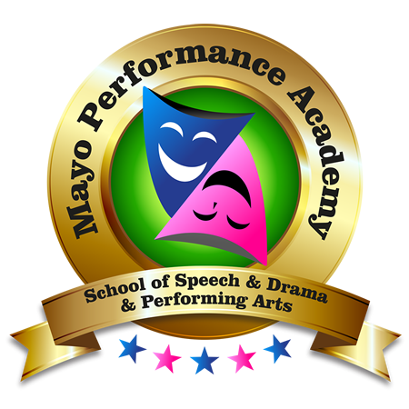
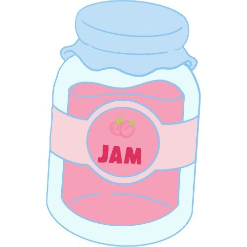

Drama Classes in Ireland
Explore 53 Drama classes and activities for kids across Ireland. Drama classes are most widely available in Dublin, Tipperary, Limerick.
Browse Drama by county


South Dublin Dance Academy
Stage School class combining singing, dancing and acting for confidence-building, culminating in an annual showcase performance for students.
View full details →
Acting Classes Dublin and Online
Acting classes running in Dublin for over 15 years, taught by David Scott, covering the Applied Art of Acting through the Actors Wednesday Workshop, the Actors Friday Studio, and the Summer Week Intensive, plus online one-to-one training and corporate training. Website: www.davidscott.ie. Email: scottdavidmichael@gmail.com
View full details →
Acting Workshops Baldoyle D13
A no-nonsense approach to the art of acting. These workshops are designed for actors of all experience levels, including those with none who are keen to unleash their creative side, and cover character development, script analysis, and delivering an authentic performance for both stage and screen. In a fun, safe space, the workshops build communication skills, public speaking, self-confidence, self-esteem, and resilience, encouraging you to push out of your comfort zone and approach each session with an open mind.
View full details →

Malahide Musical & Dramatic Society
Malahide Musical & Dramatic Society was established in 1976 when a number of people from Malahide Sports & Recreation Committee, who were lovers of music, came together to create what is now the MMDS that we know and love. The very first musical production, The Quaker Girl, took to the same stage we call home all these years later, in Malahide Community School in November of 1977. MMDS has continued to flourish since then, with musicals, plays and various concerts and performances every year, and an ever-growing group of members.
View full details →
SPEECH & DRAMA CLASSES
Mayo Performance Academy - School of Speech & Drama offers the following classes, suitable for children and young people from age 5: weekly Speech & Drama class, one-to-one confidence coaching, SEL programmes, and Drama for Wellbeing programmes.
View full details →
The Jam – Art & Drama
The Jam was established in Dublin in 2022. Our aim is to facilitate fun, engaging and memorable experiences for young people through the arts. We run art, drama and integrated art and drama camps and classes throughout North Dublin, and also offer workshops for schools and libraries. Our party packages provide a fun and creative way to celebrate your child's birthday: in our unique integrated experiences, your child will have the opportunity to explore and strengthen both acting and artistic endeavours. Throughout our courses, students will be given the opportunity to build a character, rehearse and perform a scene or monologue, as well as create art pieces to coincide with their chosen character or theme.
View full details →
Dublin Stage School
Combined singing, dance and drama class for young children, developing rhythm, role-play confidence and early performance skills in a fun, safe, Garda-vetted environment.
View full details →

B.A.N.T.S
With over 65 years of experience, B.A.N.T.S is Ireland's oldest theatre school, offering Speech and Drama classes for children and teenagers aged 4 to 18 in Dublin. Founded in 1951, the school has a rich legacy of excellence and a reputation for fostering a lifelong love of drama. Classes focus on building confidence, clear speech, and creativity, whether students are beginners or more advanced. Small class sizes ensure individual attention, and students have the opportunity to take grade examinations with Trinity College London and participate in solo and group competitions throughout the year.
View full details →
Curtain's Up Drama School
Curtain’s Up Drama School provides small class sizes and individual attention to students from 4yrs and up. The aim of the school is to create a safe and structured environment where participants can play and create. Classes include poetry and scripted performance in preparation for the Irish Board of Speech and Drama exams and our showcase, as well as work on improvisation, communication, creative drama, vocal technique, confidence building, mime and imagination.
View full details →
DADA
DADA has been nurturing young talent for 25 years, offering a wide range of classes for kids aged 3 to 18. Led by Hilary Cahill, their experienced and dedicated teaching staff focus on building confidence and creativity in a safe, fun environment. Students have the chance to perform in the annual show at the Civic Theatre, with recent productions including Oliver!, Chitty Chitty Bang Bang, Matilda, and Bugsy Malone. Plus, advanced students in 'Your Theatre' take part in their own productions at Smock Alley Theatre, with past shows like Into The Woods and The Secret Garden.
View full details →Dublin Stage School
Dublin Stage School offers acting, singing, and dance classes for young performers aged 4 to 18 in Blackrock, Killiney, and Castleknock. Their professional coaching helps build confidence and creativity in a fun, safe, and supportive environment. Students have the opportunity to perform at prestigious venues like the Bord Gáis Energy Theatre, The National Concert Hall, and The Gaiety Theatre. They have also appeared in major stage productions such as Miss Saigon, Les Misérables, Matilda, and Joseph and the Amazing Technicolor Dreamcoat, as well as TV and film projects including Vikings, Penny Dreadful, and Angela's Ashes.
View full details →

Gaiety School of Acting
The Gaiety School of Acting offers classes and drama for kids between 8 and 12 years old - have fun, meet new friends, gain confidence, and expand your little one's imagination. They offer several different courses, from the Young Gaiety Drama Workshop to an extensive list of acting summer camps to suit your budding thespians.
View full details →
NPAS
The National Performing Arts School is located in the Docklands and Sandymount, and is open to students aged from 2 to 22 years old. Drama/acting classes include dramatic play, story enactment, imagination journeys, improvisation, theatre games, music, and dance - 'let's pretend' is the norm in creative drama class, not just a child's game. A show is performed in the Olympia Theatre every two years.
View full details →

PlayAct Drama School
PlayAct Drama School offers dynamic and creative drama workshops where kids and teens can build confidence, express themselves, and make new friends. Through acting, writing, and creating props, students develop social skills and learn to communicate in a fun and relaxed environment. The workshops are designed to meet students where they are, focusing on their interests and strengths to help them grow and explore their creativity - it's all about adventure, discovery, and learning through play.
View full details →B.A.N.T.S
With over 65 years of experience, B.A.N.T.S is Ireland's oldest theatre school, offering Speech and Drama classes for children and teenagers aged 4 to 18 in Dublin. Founded in 1951, the school has a rich legacy of excellence and a reputation for fostering a lifelong love of drama. Classes focus on building confidence, clear speech, and creativity, whether students are beginners or more advanced. Small class sizes ensure individual attention, and students have the opportunity to take grade examinations with Trinity College London and participate in solo and group competitions throughout the year.
View full details →B.A.N.T.S
With over 65 years of experience, B.A.N.T.S is Ireland's oldest theatre school, offering Speech and Drama classes for children and teenagers aged 4 to 18 in Dublin. Founded in 1951, the school has a rich legacy of excellence and a reputation for fostering a lifelong love of drama. Classes focus on building confidence, clear speech, and creativity, whether students are beginners or more advanced. Small class sizes ensure individual attention, and students have the opportunity to take grade examinations with Trinity College London and participate in solo and group competitions throughout the year.
View full details →B.A.N.T.S
With over 65 years of experience, B.A.N.T.S is Ireland's oldest theatre school, offering Speech and Drama classes for children and teenagers aged 4 to 18 in Dublin. Founded in 1951, the school has a rich legacy of excellence and a reputation for fostering a lifelong love of drama. Classes focus on building confidence, clear speech, and creativity, whether students are beginners or more advanced. Small class sizes ensure individual attention, and students have the opportunity to take grade examinations with Trinity College London and participate in solo and group competitions throughout the year.
View full details →Curtain's Up Drama School
Curtain’s Up Drama School provides small class sizes and individual attention to students from 4yrs and up. The aim of the school is to create a safe and structured environment where participants can play and create. Classes include poetry and scripted performance in preparation for the Irish Board of Speech and Drama exams and our showcase, as well as work on improvisation, communication, creative drama, vocal technique, confidence building, mime and imagination.
View full details →Dublin Stage School
Dublin Stage School offers acting, singing, and dance classes for young performers aged 4 to 18 in Blackrock, Killiney, and Castleknock. Their professional coaching helps build confidence and creativity in a fun, safe, and supportive environment. Students have the opportunity to perform at prestigious venues like the Bord Gáis Energy Theatre, The National Concert Hall, and The Gaiety Theatre. They have also appeared in major stage productions such as Miss Saigon, Les Misérables, Matilda, and Joseph and the Amazing Technicolor Dreamcoat, as well as TV and film projects including Vikings, Penny Dreadful, and Angela's Ashes.
View full details →Dublin Stage School
Dublin Stage School offers acting, singing, and dance classes for young performers aged 4 to 18 in Blackrock, Killiney, and Castleknock. Their professional coaching helps build confidence and creativity in a fun, safe, and supportive environment. Students have the opportunity to perform at prestigious venues like the Bord Gáis Energy Theatre, The National Concert Hall, and The Gaiety Theatre. They have also appeared in major stage productions such as Miss Saigon, Les Misérables, Matilda, and Joseph and the Amazing Technicolor Dreamcoat, as well as TV and film projects including Vikings, Penny Dreadful, and Angela's Ashes.
View full details →Gaiety School of Acting
The Gaiety School of Acting offers classes and drama for kids between 8 and 12 years old - have fun, meet new friends, gain confidence, and expand your little one's imagination. They offer several different courses, from the Young Gaiety Drama Workshop to an extensive list of acting summer camps to suit your budding thespians.
View full details →Gaiety School of Acting
The Gaiety School of Acting offers classes and drama for kids between 8 and 12 years old - have fun, meet new friends, gain confidence, and expand your little one's imagination. They offer several different courses, from the Young Gaiety Drama Workshop to an extensive list of acting summer camps to suit your budding thespians.
View full details →NPAS
The National Performing Arts School is located in the Docklands and Sandymount, and is open to students aged from 2 to 22 years old. Drama/acting classes include dramatic play, story enactment, imagination journeys, improvisation, theatre games, music, and dance - 'let's pretend' is the norm in creative drama class, not just a child's game. A show is performed in the Olympia Theatre every two years.
View full details →PlayAct Drama School
PlayAct Drama School offers dynamic and creative drama workshops where kids and teens can build confidence, express themselves, and make new friends. Through acting, writing, and creating props, students develop social skills and learn to communicate in a fun and relaxed environment. The workshops are designed to meet students where they are, focusing on their interests and strengths to help them grow and explore their creativity - it's all about adventure, discovery, and learning through play.
View full details →PlayAct Drama School
PlayAct Drama School offers dynamic and creative drama workshops where kids and teens can build confidence, express themselves, and make new friends. Through acting, writing, and creating props, students develop social skills and learn to communicate in a fun and relaxed environment. The workshops are designed to meet students where they are, focusing on their interests and strengths to help them grow and explore their creativity - it's all about adventure, discovery, and learning through play.
View full details →PlayAct Drama School
PlayAct Drama School offers dynamic and creative drama workshops where kids and teens can build confidence, express themselves, and make new friends. Through acting, writing, and creating props, students develop social skills and learn to communicate in a fun and relaxed environment. The workshops are designed to meet students where they are, focusing on their interests and strengths to help them grow and explore their creativity - it's all about adventure, discovery, and learning through play.
View full details →Aoife Burke School of Drama
After-school drama classes in Rathfarnham (Fridays) and Ballinteer (Saturdays), with Tiny Tots (3-5), Juniors (6+), Intermediates and Teens groups.
View full details →Timprov
Beginner-friendly improv courses in Marino, focused on confidence-building, listening and spontaneous storytelling; 6-week Learn Improv course.
View full details →Stage School Limerick
Weekly dance, drama and singing classes led by Ciara Sexton (Riverdance) and Orielle O'Donnell at Ballynanty St Munchins Sports and Social Hub.
View full details →Limerick School of Acting
Kids acting classes led by Nigel Mercier, Saturdays at St. Michael's Hall (Pery Square) and Sundays at Kilmurry Arts Centre, ages 6-18 in graded groups.
View full details →Theatrics Naas
Drama and musical theatre classes for ages 5-17 at The Moat Theatre, Naas.
View full details →Bryan Carr School of Performing Arts - Tralee
Saturday stage school for ages 5+, singing/dance/acting, Collis Sandes House, Oakpark; ~€6/hour, two annual musicals at Siamsa Tire.
View full details →Speak Out Drama - Portlaoise
Award-winning drama school offering acting, singing and dance classes plus summer camps; performances at Dunamaise Arts Centre.
View full details →AKT Stage School - Athlone
Drama, dance and music for ages 4-18, established since 2013; focus on self-esteem and belonging.
View full details →Mullingar Arts Centre - Kinder Stage School
Drama, dance and music for ages 3-6, Mon/Thu sessions at Mullingar Arts Centre.
View full details →An Grianán Youth Theatre - Letterkenny
Junior (7-12) and Senior (13-18) youth theatre, Sept-June, at An Grianán Theatre, Letterkenny.
View full details →Innovations Theatre School - Gorey
Performing arts for ages 5-18: drama, dance and singing over three 10-week terms, two productions/year at Gorey Little Theatre.
View full details →Orla Gildea School of Speech and Drama - Celbridge
Drama classes at The Mill, Celbridge, Wednesdays: Junior (5-7) and Intermediate (8-12); €215/term.
View full details →Gaiety School of Acting - Kids Drama Malahide
Young Gaiety Drama Workshop for ages 8-10 at Malahide Castle & Gardens; €250/term, new term April.
View full details →Drama House - Malahide
Junior, Intermediate and Senior musical theatre and youth theatre for ages 4-12, plus summer camps.
View full details →Bellvue Academy - Theatre Totz
Dance (5-13), Theatre Totz (3-5) and Broadway Bratz musical theatre (9-12) in Clonmel.
View full details →Orla Gildea - Leixlip Youth & Community Centre
Drama classes Thursdays: Junior (5-7), Intermediate (8-12), Senior teens; €195/term with pay-as-you-go trial.
View full details →Tullamore Stage School
Drama, music, song and dance classes for children, structured by age and ability.
View full details →Centre Stage School Mallow - Theatre Tots
Drama for toddlers to junior infants (Toddler, Preschool and Junior Infant Theatre Tots), also Kanturk and Charleville studios.
View full details →Presentation Arts Centre - Red Moon Youth Theatre, Enniscorthy
Youth theatre Thursdays 4:30-5:30pm for Junior Infants-6th Class, drama/communication/confidence focus.
View full details →Shooting Stars Athy Stage School
Performing arts (singing, dance, drama) from age 3, six age groups, Garda-vetted teachers.
View full details →Stage Performers - Ratoath
Singing, dancing and drama from age 3, Wednesdays at Ratoath Community Centre, age-graded groups (Mini's to Teens).
View full details →Theatre Kids - Fethard-on-Sea & New Ross
Speech & drama classes for ages 4-12 and teens, led by Heather Hadrill.
View full details →Dwan Academy - Dance Drama Music, Thurles
Performing arts programme ages 4-18: Theatre School, Boys Musical Theatre, Ballet, Drama, Hip Hop, Acro and instrument lessons.
View full details →Born 2 Perform Stage School - Monaghan
Ballet (Mon), Hip Hop (Tue) and Stage School dance/drama/singing (Sat) for ages 3+, at Monaghan Peace Campus.
View full details →Next Stage Theatre School - Dunboyne
After-school theatre for Minis (preschool-senior infants) and Main School (1st-6th class) at Oak Centre, Castlefarm.
View full details →AKT Stage School - Ballinasloe
Friday performing arts classes, Preschool through 3rd Year, at Town Hall Theatre, Ballinasloe; €180-230/term.
View full details →Carrick-on-Suir Musical Society Performing Arts Academy
Music, dance and drama training for all ages at The Strand Theatre, Carrick-on-Suir; family-friendly.
View full details →No classes match your filters.